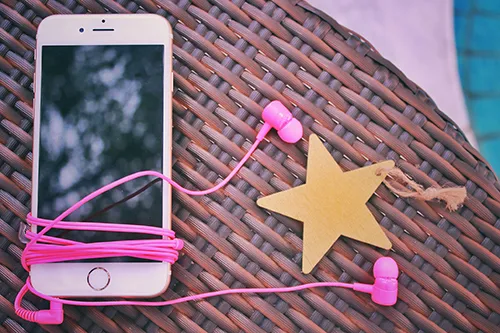

創作物の宝物庫-MUSICエリア-世界に楽しいを届けて

ここでは、MUSICを聴いて頂きます
私が作成した代物になります
興味を持っていただけると幸いです
Supported by Kanon Shirakumo
- 世界に楽しいを届けて
ポイント:白雲果音と重音テトの出会いの物語を歌った歌唱曲になっているがあくまで作成時の感覚であり他の人には他の組み合わせに感じると言う事。歌いやすさはなく、あるのは楽しいと届けたいという思いがあるくらいである。
歌詞:私（わたし）は貴方（あなた）に出会った（であった）ー
楽し（たのし）そうに歌う貴方（うたうあなた）に出会った（であった）ー
貴方（あなた）の歌声（うたごえ）はとても綺麗（きれい）で、とても楽し（たのし）そうな声（こえ）だった間違いない（まちがいない）
なんて思っていた（おもっていた）けれど、それが確信（かくしん）に変わった（かわった）の私（わたし）が求めていた（もとめていた）声（こえ）それが貴方（あなた）だったのだと私（わたし）は確信（かくしん）したの思いで（おもいで）で終わらない（おわらない）
その為（ため）に勇気（ゆうき）を出して（だして）話し掛けてみた（はなしかけてみた）の思った事（おもったこと）がそのまま口に出て（くちにでて）いて困らせる（こまらせる）かと思って（おもって）しまったわ
歌声（うたごえ）を聞いて（きいて）くれてありがとう
貴方（あなた）は言って（いって）くれたよね、それが私（わたし）の心（こころ）に響いて（ひびいて）心（こころ）から喜んで（よろこんで）楽しく（たのしく）なってしまったわ私（わたし）は貴方（あなた）と友達（ともだち）に成りたい（なりたい）
そういった私（わたし）の心（こころ）は熱くなった（あつくなった）けれど、貴方（あなた）は既に（すでに）友達（ともだち）でしょ？と言って（いって）くれたんだ楽しく（たのしく）なった私（わたし）は貴方（あなた）を連れて行きたい（つれていきたい）
そういった私（わたし）の手（て）を振り解いて（ふりほどいて）ごめんね、私（わたし）は未だ（まだ）此処で（ここで）歌いたい（うたいたい）のと言った（いった）貴方（あなた）を私（わたし）は止め（とめ）られなかった
んだよ君（きみ）と割れた（われた）
道（みち）の途中（とちゅう）では心（こころ）がずきずきするの誰（だれ）も一緒（いっしょ）に居ない（いない）
寂しい（さびしい）って思う（おもう）からずきずきするのそれとも楽しく（たのしく）ないからずきずきするのかな私（わたし）には分からない（わからない）
楽しい（たのしい）と感じた（かんじた）のは久々過ぎて（ひさびさすぎて）忘れて（わすれて）いたの
この寂しさ（さびしさ）を誰（だれ）も居ない（いない）孤独（こどく）の間隔（かんかく）誰も居ない（だれもいない）
この空間（くうかん）友達（ともだち）と一緒（いっしょ）でも感じ（かんじ）なかった楽し（たのし）さをやっと見つけた（みつけた）のに、心（こころ）
失い（うしない）かけてやっと見つけた（みつけた）私（わたし）の楽しい思い（たのしいおもい）
この思い（おもい）世界（せかい）に届け（とどけ）世界（せかい）に楽しい（たのしい）を届けて（とどけて）よこの空（そら）よ私（わたし）に貴方（あなた）との時間（じかん）をまた夢見させて欲しい（ゆめみさせてほしい）
あの後（あと）出会った場所（であったばしょ）に戻った（もどった）けれど貴方（あなた）は居なくて（いなくて）私（わたし）の楽しい（たのしい）は崩れた（くずれた）
また失い（うしない）そうになった私（わたし）の意志（いし）
溶かして（とかして）くれた貴方（あなた）は私（わたし）の後ろ（うしろ）に居たんだね（いたんだね）楽しい時間（たのしいじかん）をー
ありがとう私（わたし）の楽しい（たのしい）を見つけて（みつけて）くれてありがとう世界（せかい）に楽しい（たのしい）を届けて（とどけて）
楽しい（たのしい）楽しい（たのしい）
どういたしまして貴方（あなた）の言葉（ことば）が私（わたし）の楽しい（たのしい）を擽る（くすぐる）